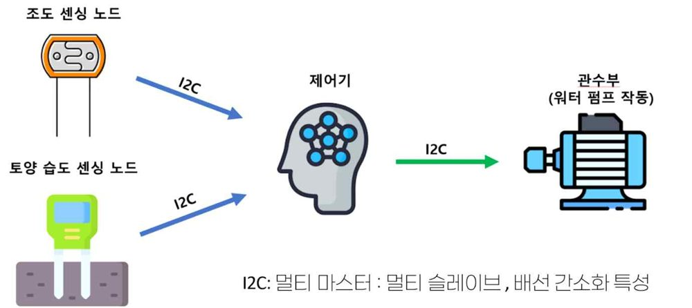
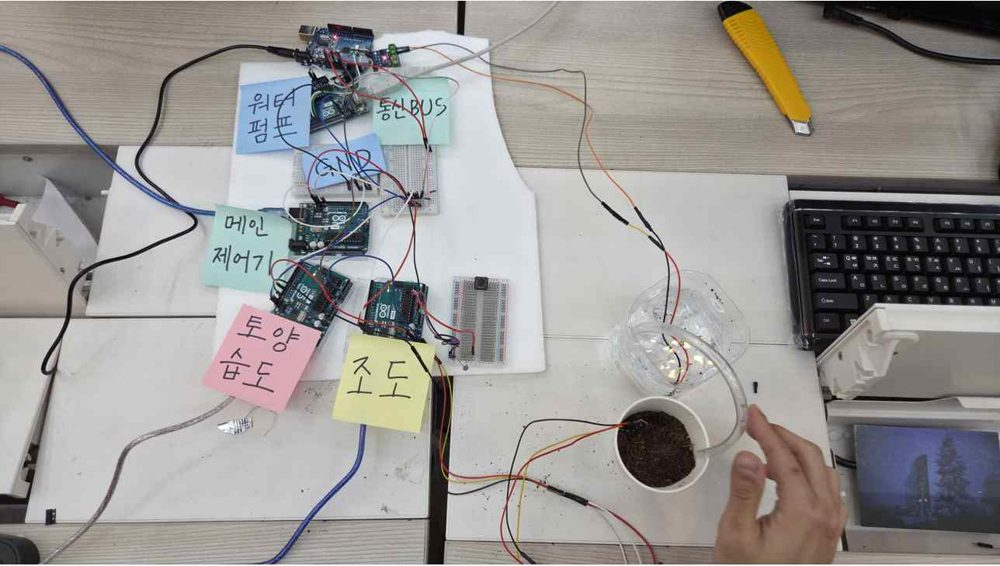
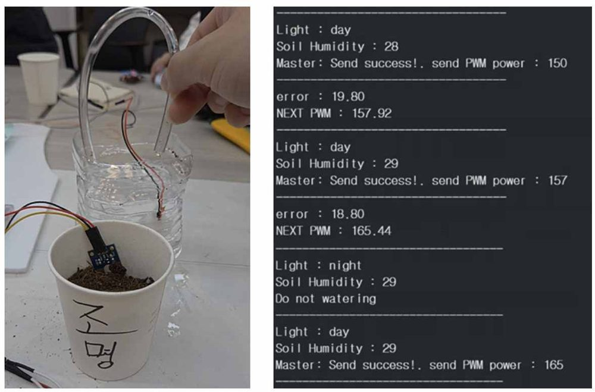

전공디깅#Arduino#I2C 멀티마스터#PWM#피드백 제어
지능형 자동 관수 장치
2025 전공디깅 프로젝트 · ACEteam · 최우수상
- 문제
- 처음에는 관수 기준을 코드에 숫자로 박아 넣었는데, 흙이나 펌프가 바뀌면 물을 너무 많이 주거나 적게 줬습니다.
- 접근
- 스마트팜과학과 학생과 협업해 공신력 있는 자료로 토양과 작물별 기준을 잡았습니다. 관수 후 습도를 다시 재서 다음 펌프 세기를 스스로 고칩니다.
- 결과
- 2025 전공디깅 프로젝트 최우수상. 건조, 과습, 낮과 밤, 물이 많을 때, 적을 때의 다섯 가지 시연에서 의도대로 동작했습니다.



관수 기준 계산
토양 습도가 Trig = FC − RAW 아래로 떨어지면 FC까지 채웁니다. 기준값은 상업용 배양토 36종의 측정 평균(Schindler 외, 2016)과 FAO 보고서의 작물별 허용 고갈률 p에서 가져왔습니다. 상추를 예로 들면 아래와 같습니다.
- FC (포장 용수량)
- 47.8%
- PWP (영구 위조점)
- 14.7%
- TAW = FC − PWP
- 33.1%
- RAW = p × TAW
- 0.3 × 33.1 = 9.93%
- 관수 트리거
- 47.8 − 9.93 = 37.87%
시스템
- 조도 센싱, 토양 습도 센싱, 제어기, 관수 노드 4개를 I2C 멀티마스터로 연결. 보낼 데이터가 있는 노드가 그때 마스터가 됨
- 낮과 밤은 절대 기준, 급변 감지, 경계값을 함께 봐서 판정하고 밤에는 관수를 막음
- 관수 5초 뒤 습도와 목표(FC)의 차이만큼 다음 펌프 PWM을 올리거나 내림. 과습이 더 위험해서 과습 쪽 이득을 더 크게 둠
- 관수 노드는 Timer2 오버플로 인터럽트로 펌프 작동 시간을 잼
장치를 만들며 필요했던 지식을 거꾸로 따라가 스마트팜과 전자공학 융합 교육과정 로드맵(전공 41과목, 교양 6과목, 141학점)도 함께 만들었습니다.